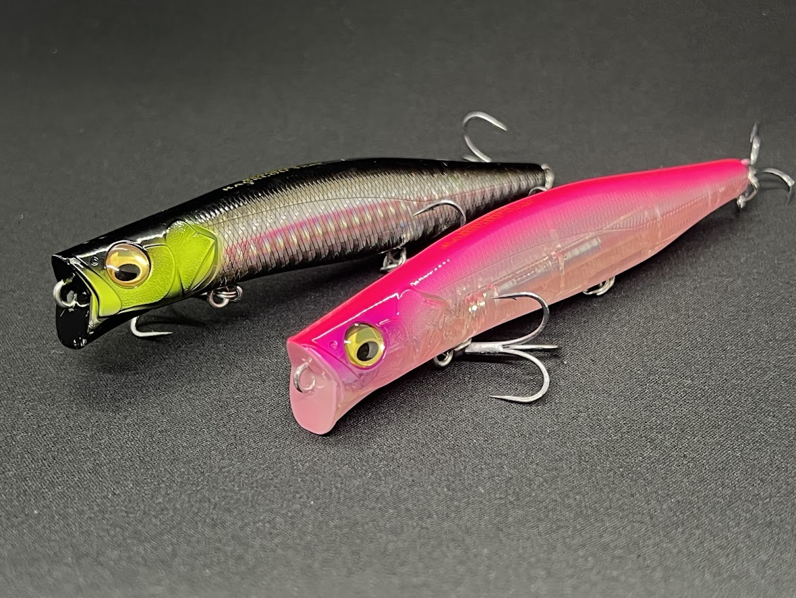
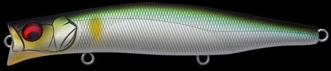
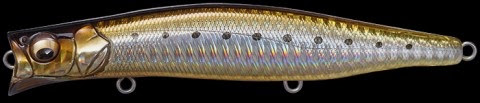
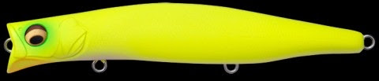

カゲロウ124F（KAGELOU 124F）
カゲロウ124F（KAGELOU 124F）はMegabass（メガバス）のフローティングシャローランナーです。
ランカーハンター・久保田剛之プロデュースの「対タフコン」シーバス用ミノー。大きく切られたダーターカップが生む可変アクションと、シャフトレス重心移動システム「LBOⅡ」による圧倒的飛距離で、シャローに差す大型シーバスを狙い撃つ名作。入手困難なことでも知られる、シャローランナーの絶対王者です。

スペック
- メーカー
- Megabass（メガバス）
- 長さ
- 124 mm
- 重さ
- 22 g
- フック
- #4×3
- レンジ
- 0〜20cm
- タイプ
- フローティング（シャローランナー）
- 重心移動
- LBOⅡ（シャフトレス）
- アクション
- 可変アクション（低速ロール／高速スライド＋ロール）
- ターゲット
- シーバス・ヒラスズキ・ヒラメ
- カラー
- 全13色
- 開発者
- 久保田剛之
- 価格
- 2300円(税別)
▼今すぐチェック

カゲロウ124Fの特徴
トップオブシャローランナー
揺らぎアクションでランカーを狂わすシャローランナーの絶対王者
-
ダーターカップが生む「揺らぎ」の可変アクション
大きく切られたダーターカップが水を強く押しつつ不規則に受け流す。低〜中速では微細なナチュラルロール、中〜高速ではスライドを伴ったアピール力のあるロールへと移行。流れの変化で自発的にバランスを崩す「揺らぎアクション」が食わせの間を作り、追尾してきたシーバスの捕食スイッチを強制的にONにする。
-
LBOⅡで常識を覆す飛距離
シャフトを排除しウェイト自体にボールベアリングを内蔵した新世代重心移動システムLBOⅡを搭載。キャスト時の慣性インパクトで驚異的な飛距離を叩き出し、着水後は瞬時に重心が前方へ戻って即アクション開始。近距離戦・ストラクチャー撃ちでも立ち上がりの速さが光る。
-
レンジ0〜20cmの表層特化＋#4×3の掛かりの良さ
シャローエリアに差す大型シーバスを狙い撃つため潜行深度を0〜20cmに設定。水面直下を引き波を立てながら攻められる。#4トレブル3本仕様でショートバイトも掛けやすく、大型のランカーシーバスにも対応する強度を確保している。
カゲロウ124Fの使い方
基本はデッドスロー〜スローのただ巻き。背中が水面から消えるくらいの超スローで引くと食わせ能力が最大化する。真骨頂はドリフト——アップやクロスにキャストして糸ふけを取る感覚で流し、ブレイクラインやストラクチャー際の流れのヨレに当てると「揺らぎアクション」が発動してバイトが多発する。ファストリトリーブでもアクションが破綻しないため、活性が高い時は速巻きでスライドさせてリアクションを狙うのも有効。手前まで追ってくることが多いので最後まで気を抜かず巻き切ること。
カゲロウ124Fの得意な状況
足場の低いシャローの河川・河口・干潟など流れのあるポイントが最も得意。水押しの良さを活かして凪いだサーフでのヒラメ・ヒラスズキ狙いにも対応する。特に雨後の増水時など大型が狙いやすいタイミングで、大きい波動ながらナチュラルなアクションで誘えるカゲロウの強みが活きる。ナイトゲームで表層を意識したシーバスに対するパイロットルアーとしても優秀。一方、ボリュームがあるため向かい風には弱く、足場が高い場所では棒引きになりやすい点は注意。
ワンポイント
カゲロウ124Fで最も釣れる巻きスピードは「本当に動いているのか分からなくなるくらいの超デッドスロー」。背中が水面からギリギリ消えるか消えないかの速度でじっくり見せることで、揺らぎアクションが最大限に活きてランカーが口を使う。速く巻きたくなる気持ちを抑え、「これ動いてる？」と不安になるくらいのスローを意識するのが釣果への近道。精巧な作りゆえに、橋脚など硬いストラクチャーにぶつけるとLBOⅡが動かなくなることがあるため、キャストやトレースコースには気を配ろう。
オススメカラー

OBORO AYU（朧アユ）カゲロウを象徴する人気カラー。澄み潮・ナチュラルパターンの鉄板。

GG ステインイワシイワシパターンのナチュラル系。デイ・ナイト問わず万能。

ドチャート濁り・ローライト時のハイアピール。サーフ・河川の増水時に強い。
 パール系
パール系
ナイトゲームで安定した実績。常夜灯周りやマヅメ時に。
画像出典:メガバス公式HP
カゲロウ124Fに似ているルアー
- カゲロウMD125F（メガバス）——同シリーズのミッドダイバー。最大約80cmまで潜り、強めのロールと引き波で「見せて寄せる」タイプ。濁り・ローライトでレンジを入れたい時は124Fよりこちら。
- komomo SF-125（ima／コモモ）——同じ125mmクラスのリップレスシャローランナーの名作。カゲロウより軽く、河川の明暗をふらつきアクションで攻める定番。愛用者が多い。
- アイザー125F（ブルーブルー）——125mm/22gとカゲロウと同ウェイト設定でよく比較される。マグネット式重心移動で飛距離と風の中での安定性が高く、デッドスローのふらつきでスレたランカーを食わせる。